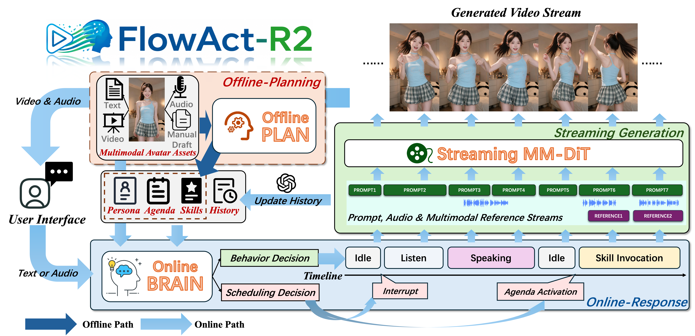

Overview of FlowAct-R2. FlowAct-R2 enables proactive, lifelike humanoid video generation by coupling a two-stage proactive agent with a streaming multi-reference DiT. The agent pre-plans long-horizon agendas and reusable multimodal skills offline, and dynamically orchestrates online responses, tool execution, and real-time interruptions. Conditioned on rolling action prompts and streaming audio, the generative backbone incorporates video-driven RoPE and an explicitly trained (R+I)2V multi-reference mechanism—supporting dynamic image, audio, and video references to suppress cumulative drift and synthesize high-fidelity 720p avatar videos in real time.
Existing streaming video generation methods are typically adapted from image-to-video (I2V) or text-to-video (T2V) models, limiting their ability to incorporate dynamically evolving references and often requiring substantial architectural modifications for long-horizon consistency. However, interactive digital humans demand continuous multimodal control across diverse scenarios, such as e-commerce livestreaming, talent performances, and scene exploration.
We present FlowAct-R2, a streaming adaptation of Seedance 2.0 Mini designed for interactive digital humans. Rather than augmenting an I2V model with attention sinks, FlowAct-R2 builds directly on a pre-trained reference-to-video (R2V) backbone, inheriting its strong reference preservation capability. We employ Diffusion Forcing to enable autoregressive streaming inference while preserving the backbone and its bidirectional spatiotemporal attention. We further extend Diffusion Forcing to streaming multimodal reference generation, allowing image, audio, and video references, together with text prompts, to be continuously updated or switched during inference. A modified RoPE aligns incoming reference chunks with the corresponding generation timeline, ensuring temporally synchronized control.
The strong reference conditioning of the R2V backbone already substantially reduces autoregressive drift by continuously anchoring generation to the reference content. To further suppress residual error accumulation, we condition the model on partially noised historical motion frames rather than clean ones, improving its robustness to imperfect generated histories. Specialized audio-driven training enhances synchronization among speech, lip movements, expressions, and head poses, while coarse-to-fine inference progressively restores visual details. Together, these designs enable stable, hour-long, real-time 720p digital human generation under continuous multimodal control.
Proactivity in a streaming digital human extends beyond generating timely responses to user inputs: the digital human must continuously determine what to do next, even in the absence of explicit instructions, while maintaining a coherent persona and pursuing the long-term objectives of the live session. This creates a fundamental tension between long-horizon preparation and online adaptation. Purely online planning is often too myopic and latency-sensitive to organize an entire session or synthesize complex behaviors on demand, whereas a fixed offline script cannot accommodate unpredictable audience interactions or evolving contexts.
FlowAct-R2 therefore adopts a two-stage agent architecture. Offline, it derives a persona from multimodal character assets, organizes the session into a long-horizon agenda, and compiles complex behaviors into reusable skills. Online, a scheduling agent integrates the agenda, interaction events, and historical context to determine when to initiate, overlay, defer, interrupt, or resume behaviors, while invoking the appropriate skills for execution. This design enables the digital human to autonomously sustain the live session while remaining responsive to interactions.
FlowAct-R2 simulates lifelike entertainment streamers that interact with live audience messages and invoke skills to perform singing, dancing, and other talent-driven behaviors.
With streaming multi-reference conditioning, FlowAct-R2 enables live shopping avatars to hold products, try on items, and respond to audience feedback in interactive product-selling streams.
FlowAct-R2 enables natural video chatting with responsive listening, expressive turn-taking, and lifelike avatar behaviors for seamless real-time interaction.
FlowAct-R2 supports vlog streams with multi-scene switching and audience-driven branching, allowing live viewer inputs to steer the next scenario and action.
Enabled by the planning capabilities of its proactive agent, FlowAct-R2 delivers clearer videos, more natural and expressive motions, stronger action responsiveness, and more accurate, contextually appropriate dialogue than Vidu-S1, achieving GSB scores of +54.76% for video quality and +40.48% for real-time interaction in human evaluations, whereas Vidu-S1 is comparatively static and may introduce unrelated conversational memory.
Compared with Vidu-S2, FlowAct-R2 better preserves the appearance of referenced objects and switches more naturally between product references, demonstrating stronger object consistency and reference switching in these live shopping examples. Both Vidu-S2 and FlowAct-R2 can trigger dance from text; FlowAct-R2 further supports reference-video conditioning, enabling more expressive dance generation.
@article{2026flowact-R2,
title={FlowAct-R2: },
author={},
journal={arXiv preprint arXiv:},
year={2026}
}
@article{wang2026flowact,
title={FlowAct-R1: Towards Interactive Humanoid Video Generation},
author={Wang, Lizhen and Zhu, Yongming and Ge, Zhipeng and Zheng, Youwei and Zhang, Longhao and Hu, Tianshu and Qin, Shiyang and Luo, Mingshuang and Zhang, Jiaxu and Chen, Xin and others},
journal={arXiv preprint arXiv:2601.10103},
year={2026}
}
@article{zhu2024infp,
title={INFP: Audio-driven interactive head generation in dyadic conversations},
author={Zhu, Yongming and Zhang, Longhao and Rong, Zhengkun and Hu, Tianshu and Liang, Shuang and Ge, Zhipeng},
journal={arXiv preprint arXiv:2412.04037},
year={2024}
}